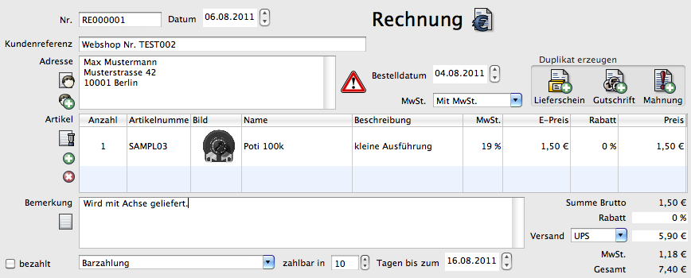
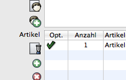
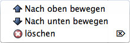
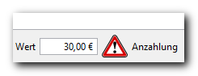

Der Dokumenteneditor ist für alle Arten von Dokumenten ähnlich. Je nach Art des Dokumentes (Brief, Rechnung...) sind einige Elemente ausgeblendet.
Wird ein Dokument vom Typ Bestellung geöffnet, kann bei Stammkunden ein Dialog eingeblendet werden, der die bisher bezahlten Rechnungen und den Umsatz anzeigt.

Siehe auch Einstellungen Dokument
Dokumentennummer. Diese wird automatisch hochgezählt. Sie kann nachträglich geändert werden. Es erscheint beim Abspeichern eine Warnung, wenn sie nicht der nächsten freien Nummer entspricht.
Siehe Nummernkreise
Datum des Dokumentes. Bei einer Rechnung beispielsweise das Rechnungsdatum. Ein Ändern beeinflusst das Datum bei "zahlbar in X Tagen bis zum:"
Legt fest, ob die Rechnung später mit Netto oder Bruttopreisen ausgedruckt wird. Abhängig davon werden die Zwischensummen, Rabattbeträge, Versand und MwSt. auf ganze Netto oder Bruttowerte gerundet. Wird ein Dokument als netto angelegt, später trotzdem in ein Dokument mit Bruttopreisen gedruckt, kann es sein, dass sich die Summen um +-1 Cent unterscheiden.
Art dieses Dokumentes incl. Logo. Beispiel: Rechnung, Bestellung, Brief etc.
Referenznummer des Kunden. Bei einem Import aus dem Webshop wird hier die Webshop-Bestellnummer verwendet.
Hier kann der Name des Mitarbeiters eingegeben werden, der für diesen Vorgang zuständig ist.
Adresse des Kunden. Bei einem Lieferschein ist dies die Lieferadresse, bei allen anderen Dokumenten die Rechnungsadresse.

Die Adresse kann direkt eingegeben werden. Ebenso kann über das Icon "Kontakt" eine Liste mit allen Kontaktadressen geöffnet und die gewünschte Adresse ausgewählt werden. Dann wird neben dem Adresstext auch eine Verknüpfung mit der Adresse hergestellt. Der Adresstext sollte dann nur noch geringfügig geändert werden.
Soll eine neue Adresse eingegeben und die Adressdaten gleichzeitig als neuer Kontakt angelegt werden, so wird über dieses Symbol der Kontakteditor geöffnet und beim Speichern die Daten automatisch in das Dokument übernommen.
Siehe auch Format des Adressfeldes
Ist die Lieferadresse unterschiedlich zur Rechnungsadresse, so erscheint ein Warnsymbol. Die Lieferadresse wird beim Überfahren mit der Maus angezeigt.
Datum der Bestellung. Kann zum Beispiel auf die Rechnung gedruckt werden.
Nummer der Rechnung, die diesem Vorgang zugeordnet ist.
Die Mehrwertsteuer lässt sich für das komplette Dokument auf 0% setzen.
Erzeugt aus dem Dokument eines neues. Daten werden dabei soweit wie möglich übernommen.
Tabelle mit allen Artikeln dieses Dokumentes. Alle Spalten bis auf den (Gesamt-)Preis lassen sich ändern. Ein neuer Artikel kann hinzugefügt werden:
Auswahl des Artikels aus der Liste mit allen Produkten. Es können mehrere Artikel gleichzeitig ausgewählt werden.
Importieren aller Artikel eines Lieferscheins. Zusätzlich kann die Lieferscheinnummer in das Feld Bemerkung übernommen werden.
Es werden im Auswahldialog nur die Lieferscheine angezeigt, die noch keiner Rechnung zugeordnet sind. Ein bereits zugeordneter Lieferscheinnummer kann im Übersichtsfenster wieder zurückgesetzt werden. Ist bereits eine Kontaktadresse vergeben, werden nur die Lieferscheine dieses Kunden aufgelistet.
Dieses Icon ist nur bei Rechnungen und Proformarechnungen aktiv.
Siehe auch Lieferscheinnummer beim Import hinzufügen

Fügt eine neue Zeile mit einem Artikel ein.

Löscht den ausgewählten Artikel.
In der Artikelliste kann zusätzlich ein Vorschaubild angezeigt werden. Ein Klick auf dieses öffnet eine vergrößerte Ansicht des Produktbildes.
Siehe auch Einstellungen Dokument Vorschaubild
Bei einem Angebot kann ein Artikel als optionaler Artikel (Bedarfspostion) markiert werden. Er wird auf dem Angebot markiert und wird nicht bei der Berechnung der Gesamtsumme verwendet.
Siehe auch Einstellungen Bedarfspositionen
Artikel können über das Kontextmenü nach oben und unten verschoben werden (rechte Maustaste auf Artikelliste).
Tipp: Sind alle Preise in Brutto, kann ein Preis dennoch als Nettowert eingegeben werden. Dazu bei der Eingabe des Preises ein netto anfügen. Bei Bruttopreisen ein brutto anfügen.
Beispiel:7,00€ netto
Siehe auch Einstellungen Dokument
Feld für eine zusätzliche Bemerkung, die auf Rechnung oder Lieferschein gedruckt wird.
Es können bis zu 3 Felder für Bemerkungen eingeblendet werden
Siehe auch Einstellungen Dokument Felder "Bemerkung"
Siehe auch Platzhalter Feld "Bemerkung"
Öffnet eine Liste mit vordefinierten Texten.
Siehe Editor Text
Markierung, ob die Rechnung bezahlt wurde.
Auswahl der Zahlungsart. Je nach Zahlungsart wird auf der Rechnung der entsprechende Text gedruckt.
Siehe Editor Zahlungsart
Anzahl der Tage, innerhalb derer die Rechnung bezahlt werden muss. Beim Ändern wird automatisch das Datum angepasst.
Datum, bis zu dem die Rechnung bezahlt werden muss. Beim Ändern wird automatisch die Anzahl der Tage angepasst.
Tag des Geldeingangs.
Tatsächlicher Geldeingang. Zieht ein Kunde einen Skontobetrag ab, wird dies hier berücksichtigt. Es ist auch möglich,
Teilzahlungen zu erfassen. Dann trägt man den bereits bezahlten Wert hier ein. Öffnet man die Rechnung später erneut,
erscheint ein Warnsymbol mit dem Hinweis "Anzahlung". Der Status der Rechnung bleibt "unbezahlt".

Summe aller Artikel
Rabatt auf alle Artikel
Die Versandkosten lassen sich aus einer Liste auswählen. Es ist auch möglich, den Betrag nachträglich von Hand zu ändern. Versandkosten werden als Netto- oder Bruttowert angezeigt.
Siehe Editor Versandart
Anteil der Mehrwertsteuer
Siehe Editor Steuersatz
Gesamtsumme (Brutto) des Dokumentes incl. Mehrwertsteuer.
Siehe auch Einstellungen Dokument